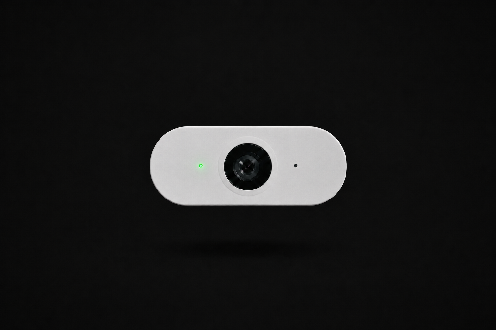
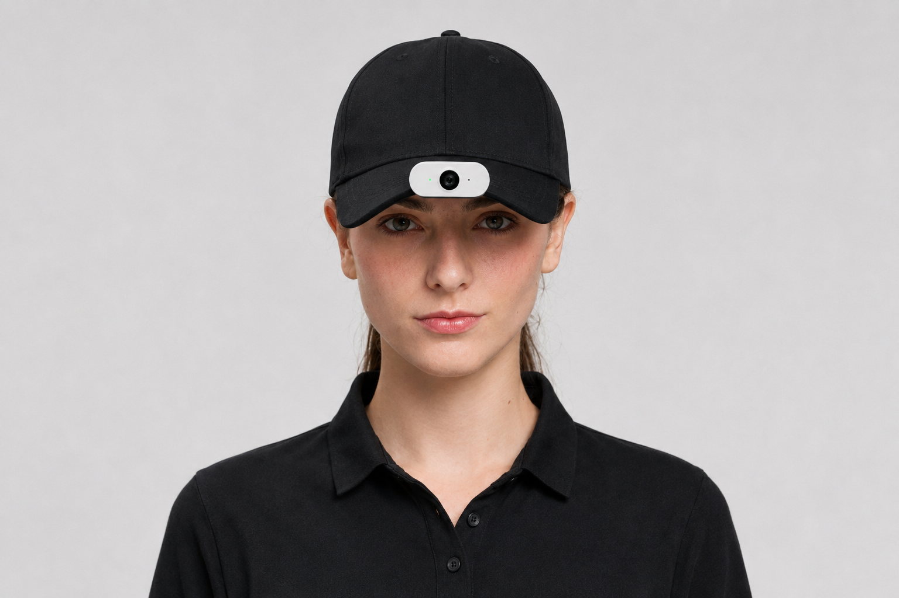
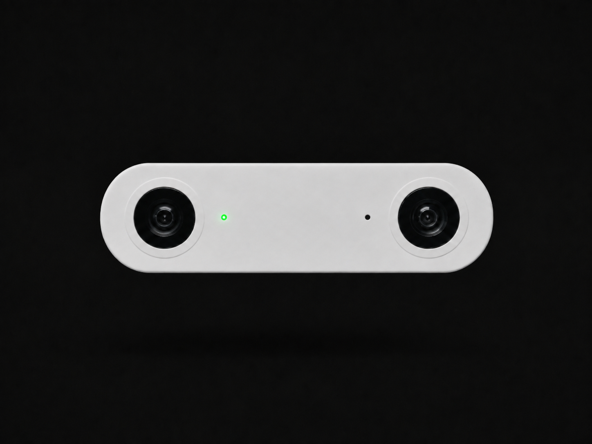
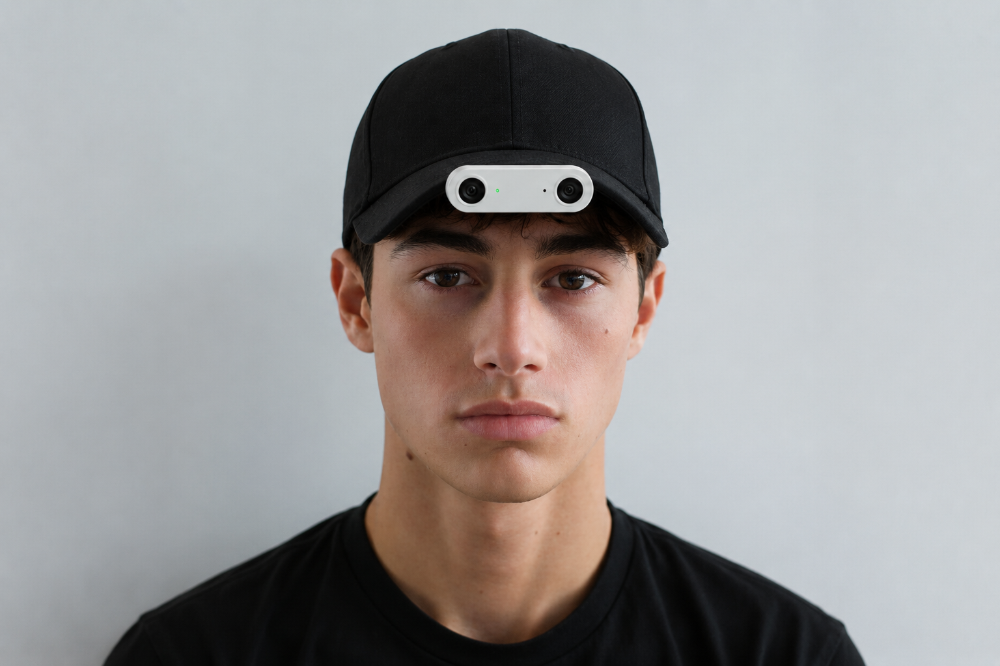

Capture Systems
The dataset starts at the sensor.
Nero designs its own capture hardware so collection architecture can be changed around the requirements of the dataset, instead of forcing every customer into the same sensor configuration.
01 / MONO CAP CAM
Scalable egocentric capture for physical AI.
Designed around collection, not consumer recording. Nero's standard monocular egocentric capture platform for scalable human demonstration and real-world perception datasets.


Capture Architecture
- Sensor
- [RESOLUTION] / [FOV]
- Frame rate
- [FRAME RATE]
- Audio
- [AUDIO]
- IMU
- [IMU]
- Compute
- [COMPUTE]
- Battery
- [BATTERY]
- Weight
- [WEIGHT]
What It Captures → What It Becomes
- RGB video
- Motion / inertial data
- Audio where enabled
- Capture metadata
- Timestamps
- Object interactions
- Action sequences
- Segmentation
- Tracking
- Task annotations
Specifications shown as placeholders pending final hardware sign-off.
02 / STEREO CAP CAM
Human demonstrations with spatial information.
Stereo Cap Cam adds synchronized binocular observations to Nero's egocentric capture stack, supporting datasets where geometry, depth and hand-object spatial relationships matter.


- LEFT RGB
- RIGHT RGB
- IMU
- TIME
- RECTIFICATION
- DISPARITY
- DEPTH / 3D
Depth accuracy, baseline and synchronization tolerance will be published with final hardware specifications.
03 / CUSTOM CAPTURE SYSTEMS
Your model defines the sensor stack.
Some programs need monocular RGB. Others need stereo vision, depth, inertial measurements, a wider camera baseline or synchronized observations from multiple viewpoints. Nero can engineer a capture configuration around the client's collection specification and deploy it through the same data infrastructure.
LiDAR
Timestamped point clouds alongside visual capture.
Wider-baseline stereo
Extended stereo separation for longer-range depth.
Multi-camera rigs
Synchronized capture from multiple calibrated viewpoints.
Alternative sensor placement
Chest, head or tool-mounted configurations.
Extended IMU
Additional inertial sensors for finer motion tracking.
Client-specific rigs
Bespoke hardware engineered to a program's exact specification.
Presented as available custom engineering options. Not every configuration is currently deployed on every vertical.